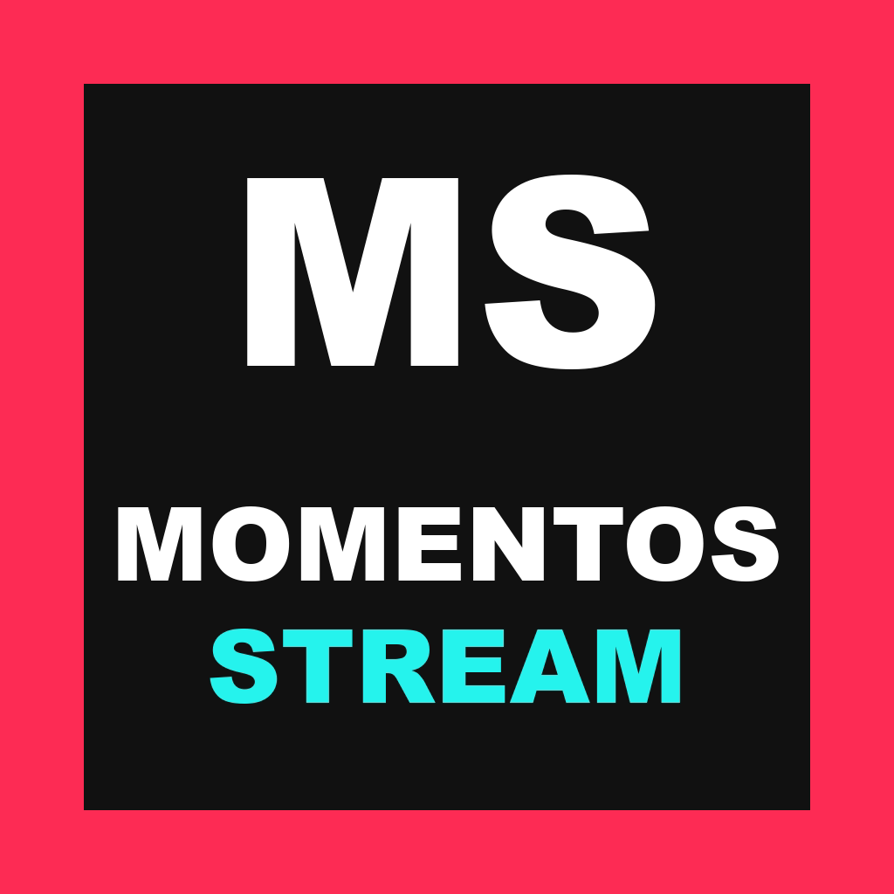

Los mejores momentos de los streams, en clips cortos y con subtítulos en castellano.
Momentos Stream es una herramienta personal: el dueño de la cuenta revisa cada clip, lo aprueba y lo publica en sus propias cuentas de TikTok y YouTube, siempre con crédito al streamer original.